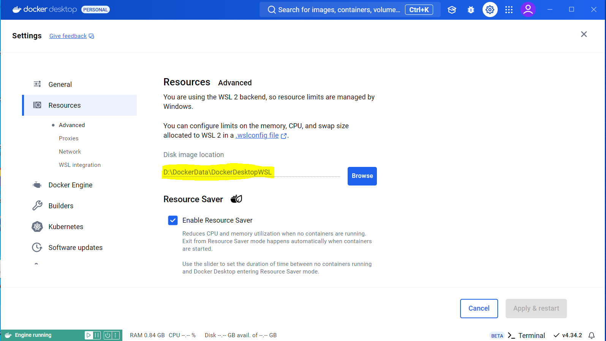

Moving Docker’s Storage Location on Windows 10 Pro
To change the default location of Docker’s storage drive (which is typically on the C: drive) on Windows 10 Pro, you’ll need to adjust the configuration in Docker Desktop to move the virtual machine’s disk image. Here’s how to do it:
Steps:
- Stop Docker Desktop: Right-click the Docker Desktop icon in the system tray and select “Quit Docker Desktop.”
- Move the Disk Image: Docker stores its data in a virtual hard disk (VHD) file. By default, this is located at
C:\Users\<YourUsername>\AppData\Local\Docker. - You’ll want to move the Docker data to another drive (for example,
D:). - Copy Data to New Drive: Navigate to
C:\Users\<YourUsername>\AppData\Local\Dockerand copy the entire Docker folder to your desired location (e.g.,D:\Docker).
If Docker is not storing its data in C:\Users\<YourUsername>\AppData\Local\Docker on your machine, it may be using a different setup or storage backend.
Steps to Change Docker’s Storage Location on Windows 10 Pro:
Check Docker’s Current Storage Path:
Docker stores container data in a specific location. If you’re using WSL 2 (Windows Subsystem for Linux 2) backend, the data might be stored within WSL’s file system, which differs from traditional Docker setups.
To check where Docker stores data:
Open a PowerShell and run:
docker infoLook for Docker Root Dir: in the output. This shows where Docker is storing its containers and images.
Change Docker’s Root Directory (Daemon Configuration):
To change where Docker stores its data, you’ll need to modify the daemon configuration file (daemon.json).
Here’s how to update Docker’s root directory:
- Create/Edit daemon.json: Navigate to Docker’s configuration folder, usually found here:
C:\ProgramData\Docker\config\daemon.jsonIf the file doesn’t exist, create it. - Add or Modify the data-root Option: Open
daemon.jsonwith a text editor (e.g., Notepad). Add or modify the data-root option to point to your desired location. For example:
{
"data-root": "D:\\DockerData"
}- Restart Docker: After saving changes to the
daemon.jsonfile, restart Docker Desktop for the changes to take effect. You can restart Docker from the Docker Desktop system tray icon or by restarting the Docker service. - Verify Changes: After Docker restarts, run docker info again to verify that the new Docker Root Dir: is pointing to your desired location (e.g.,
D:\DockerData).
If you’re using Docker with WSL 2, note that Docker Desktop integrates closely with WSL, and its containers might be stored in a WSL virtual machine, which may be a different configuration than expected.
You also need to ensure that Docker has permission to write to the new location, and the drive is properly formatted and accessible.
If Docker’s configuration folder (daemon.json) is not located in C:\ProgramData\Docker\config, it might be in a different location depending on your Docker setup. Docker Desktop on Windows can store its configuration in different places depending on whether you’re using the WSL 2 backend or the Hyper-V backend.
Here are a few places to check for the daemon.json file:
For Docker using Hyper-V or traditional backend:
Check for the folder at:
C:\ProgramData\Docker\config\If it doesn’t exist, try creating it manually and adding the daemon.json file.
For Docker using WSL 2 backend:
You may find Docker’s WSL-specific configuration within the WSL file system. Check:
\\wsl$\docker-desktop-data\version-pack-data\community\docker\If it’s not there, then try creating it here:
C:\Users\<YourUsername>\.docker\daemon.jsonIf everything goes wrong, you can reset the Docker Desktop settings through the GUI by going to:
Settings > Reset > Reset to factory defaults
This will restore Docker to its default settings, and you can try modifying the configuration again afterward.
If you find that there is already a daemon.json file in the correct location and it already has some things specified, below is an example of where to place the data-root parameter so that you have a valid configuration.
{
"builder": {
"gc": {
"defaultKeepStorage": "20GB",
"enabled": true
}
},
"experimental": false,
"data-root": "D:\\DockerData"
}After saving your changes, you always need to go through the following steps to check that your new configuration is working:
- Restart Docker Desktop from the system tray, or restart the Docker service to apply the changes.
- After Docker restarts, open the PowerShell and run:
docker info - Check the
Docker Root Dir: section to confirm that the storage path has changed to the new location you specified.
If you see this error:
d2b: no such file or directory: unknown.
This is likely due to how Docker handles paths to files on Windows, especially when switching between Windows-native paths and Linux-style paths in WSL or Docker Desktop.
Solution:
- try setting the data-root to a WSL 2-compatible path or a path that Docker can interpret properly.
- Edit your daemon.json again and change the data-root to a path that is compatible with Docker’s expectations. So instead of using a Windows-style path (e.g.,
D:\\DockerData), try using a path under/mnt/d/if Docker is running in WSL 2. - Here’s the change you can make to your daemon.json:
{
"builder": {
"gc": {
"defaultKeepStorage": "20GB",
"enabled": true
}
},
"experimental": false,
"data-root": "/mnt/d/DockerData"
}This uses the Linux-style /mnt/d/ path to your D: drive on Windows. You may need to create DockerData on the D drive if it doesn’t exist.
Last Steps!
The following should be done as the last migration steps to move Docker Disk Image Location:
- Open Docker Desktop and go to Settings.
- Navigate to Resources > Advanced.
- In the Disk Image Location section, click Browse and select the new location, such as D:or another folder on the D: drive.
- After selecting the new location, apply the changes and restart Docker Desktop.
This should relocate Docker’s WSL2 disk image from C: to your D: drive. Screenshot is attached below for reference.
